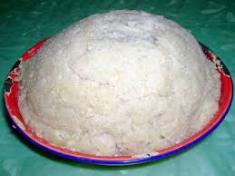

UGALI TAMU

The following is a recipe to prepare some delicious Kenyan national meal.This meal is staple food that never misses in a kenyan dinner table.
The recipe is easy to follow and does not require many ingredients or steps.
The propotions can be doubled or tripled according to the guest size serving.
This serving is for 2-3 people. ENJOY!!
Ingredients
- 76cups of water
- 1 1/2 kg of maize flour.(you may use less if you want soft paste)
- Cooking stick or something to stir with
Steps
- Boil the water in a pot.
- When the milk has boiled, add maize flour in bit by bit while stiring
- Make sure to keep stirring repeatedly and firmly to avoid forming a lumpy paste
- Continue adding the flour until you get the desired paste consistency
- When the paste is ready, it will be thick and sticky
- Cover the pot and reduce the heat
- Keep stiring the paste at intervals of 4-5 minutes for 20-30minutes
- turn the heat off, take a serving plate and flip the pot upside down onto the plate,loft it off and the paste will slide off the pot
- Serve when still hot!!